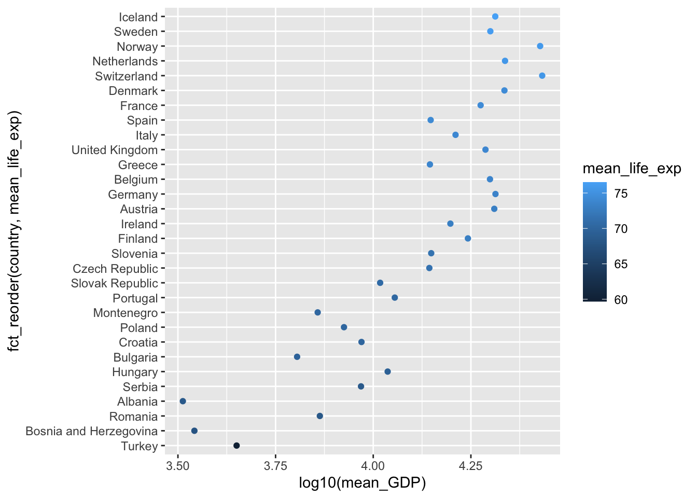

s1 <- summarize(mpg, count = n())
s1# A tibble: 1 × 1
count
<int>
1 234We’ve seen throughout the course how to combine computer code, data, tabular and graphical resultss, and natural language writing to explain and communicate our work. R markdown documents are a great tool for writing reports and ensuring they are reproducible. In this lesson we will examine a few more features of R markdown to help customize your reports, make them easier to revise, and make them more effective data analysis communication tools.
Many people use R as an interactive computer tool. This means they sit at the keyboard, type a series of commands, and store the results they want. It’s like a very fancy calculator. This is a fantastic way to explore data, learn R, and test out ideas quickly. This work is not reproducible. You would need a recording of everything that was done to reproduce the analysis. If you need to change a small step in your work, you will need to repeat all the steps.
In this course, we have been using R in a slightly more disciplined way, at least for assigned work. For every project, you create a new R markdown file, and then you write your computer instructions in code “chunks”, interspersed with English (or any other natural human language) explanations. With Rstudio, you can still use R interactively in this mode, clicking the “play” button on each chunk and seeing the output. When your analysis is done, you can “knit” the whole document. This does two important things:
You may have had the experience during the course of preparing your R markdown file, trying to knit it, and discovering an error. This error is evidence that your R markdown document is not complete, so if you rely on it, you will not be able to repeat your steps later on. So the first way R markdown aids you in reproducing your work is by giving you an easy way to test if your instructions are complete. If you can knit your file today, you can turn off your computer, and come back in a week, and be confident you will be able to reproduce your work then.
We have stressed the value of communication in this course. For some purposes you will just want to communicate by sending someone your knitted report. When you work in a team, communication is not just about the knitted report, but it includes the instructions needed to recreate the report. R markdown is great for this. But most analyses will require more than just one R markdown file. They will require data. This is why we have also learned to use R projects, version control, and to share files using GitHub. Now you can write a document to show someone else how to reproduce your work, from gathering data to making a report, and you can be confident that they will be able to make all the steps work and even add to your work in a time-efficient way.
If you have a complex project, you will have multiple directories, and possibly many data files. When reading a data file, you will need to refer to the file by name. Make sure you never use the way files are organized on your computer as part of the script. In particular never write anything like:
my_data <- read_csv("/Users/airwin/Documents/Stats-project/data/my_data.csv")because there is no way that will work on someone else’s computer! If you reorganize your Documents folder, it won’t even work on your computer! What should you do instead?
We have been using R packages and organizing all files for a project in a folder (and sub-folders) created just for that project. This is a good first step. The here package provides a useful function that allows you refer to a file relative to the directory where your .Rproj file is stored. This is important to make your R code work on someone else’s computer. Here’s how you use it:
my_data <- read_csv(here("static", "annual-number-of-deaths-by-cause.csv"))If this code works on your computer, with your R project, and you give the whole folder to a collaborator, you don’t need to worry how they organize their files.
Sometimes you will think a dataset is too large to put in your project folder. Or the data may be used by multiple projects, and you don’t want to have multiple copies. What should you do? The best options are: put the common data files in a GitHub repository (public or private), deposit the data in an online repository such as osf.io, or create an R data package of your own to manage the data on your computer and the computers of your collaborators. Which method you prefer will depend on many factors including the size of the data, how often it changes, whether it is public, or if you are allowed to redistribute it.
R markdown is a great way to manage a analysis notebook, but every time you want to update your analysis, you need to recalculate everything in your document. It is possible to store (cache) the results of a code chunk by giving it a name and setting cache=TRUE. This will store the results of that computation so that when the markdown file is recomputed, the stored results are used. This can save time, but also lead to unpredictable results depending on how the results of one code chunk and external data influence the cached code chunk.
Here is an example using the code chunk header {r test_caching, cache=TRUE}:
s1 <- summarize(mpg, count = n())
s1# A tibble: 1 × 1
count
<int>
1 234If you are going to use this feature, you should read more about caching in Rmarkdown. This page describes a do-it-yourself caching method which I recommend as well.
R packages can be obtained from several sources. The most common sources are CRAN, Bioconductor, and GitHub. The most widely used packages are on CRAN and they are checked regularly to be sure they still work. Anyone can distribute a package on GitHub and make it available, but these packages are missing a level of quality control. We have not used Bioconductor in this course; it is a CRAN-like repository forcussed on bioinformatics computations.
Installing a new package from CRAN is easy. If you put the appropriate library function call in your R markdown document, but you are missing the package, Rstudio will offer to download it for you. If the package is on GitHub, Rstudio won’t be able to help. The usual process is to search for the package on Google, then install it. You will help yourself and your colleagues if you write the installation command next to your library function call, but preface it with a comment character # to stop the code from being executed. (There is an example at the top of the source for this file: click on “view source” in the lower right of this window.)
An easy to read report is a better report. (Formatting will not turn a bad report into a good one, but good formatting can help make good results easier to digest.)
Specific recommendations:
#.) Always put a blank line before and after a heading row.* or 1.) when appropriateFor examples of these formatting tips, see the source for this file: click on “view source” in the lower right of this window.
Headings make your markdown document easier to navigate too. Look for the “show outline” button in the upper right of Rstudio’s editing pane.
There is a tidyverse style guide. Google has their own, revised from the tidyverse guide. It’s worthwhile reading these guides. Code that is formatted in a standard way is easier for you to read and easier for someone else to read.
Here is some carelessly formatted code.
gapminder |> filter(continent =="Europe") |> group_by(country) |> summarize(mean_life_exp = mean(lifeExp), mean_GDP = mean(gdpPercap)) |> ggplot(
aes(color = mean_life_exp, x = log10(mean_GDP), y=fct_reorder(country, mean_life_exp))) + geom_point()Here is the same code (and its output) formatted using styler:
gapminder |>
filter(continent == "Europe") |>
group_by(country) |>
summarize(mean_life_exp = mean(lifeExp), mean_GDP = mean(gdpPercap)) |>
ggplot(aes(color = mean_life_exp, x = log10(mean_GDP), y = fct_reorder(country, mean_life_exp))) +
geom_point()
I suggest you write neat and easy to read code in your markdown documents. Don’t use automatic tidying as an excuse to make messy code.
The first line of a code chunk can be as simple as {r} but you can also include many options between the braces. The markdown book describes the options available. Here I will demonstrate a few chunk options related to figures and formatting output.
Knitting a document usually stops when an error is encountered. This is a safety measure to alert you to a document which is not reproducible becuase of errors. On rare occasions you may want to use the option error=TRUE to allow error messages to appear in knitted output and not stop the knitting process.
1 + "A"Error in 1 + "A": non-numeric argument to binary operatorYou can output graphics in multiple file formats by adding dev = c("png", "pdf") (and other formats) to the chunk options. These files will be deleted unless you reqest they be kept, which is easily done by caching the results of at least one code chunk.
mpg |> ggplot(aes(displ, hwy)) + geom_point()
You can use chunk options to control whether the knitted document includes:
echo=FALSE to hide)results='hide')message=FALSE to hide)warning=FALSE to hide)fig.show='hide')include=FALSE)You can also stop the code from being evaluated by setting eval=FALSE.
If you have multiple lines of code with output in your chunk, the knitted document will contain several blocks of code and output with space between the blocks. These blocks can be combined into one by setting collapse=TRUE.
R code that is formatted in standardized way is easier for others to read. You can get your code automatically reformatted using tidy=TRUE and the formatR package. The styler package is another approach to automatic reformatting of R code. Use tidy='styler' in the code chunk options.
You can change the size of a figure using fig.width = 6 and fig.height=4 where 6 and 4 are lengths in inches. You can also use out.width="85%" to set the width of the figure as a proportion of the document width. You can center a figure horizontally using fig.align='center'.
You can use R variables and code in the chunk options.
If you use R for long enough and with enough other people, you will discover that R packages get revised and don’t always work the same way as they used to. This can be a major impediment to reproducibility. The simplest solution to this problem is to document the R packages you use in your analysis by adding a line of code to the end of your report that lists the packages and their version numbers in use. By looking at your knitted output, a user having trouble (possibly you in the future!) can look to see which packages have changed.
sessionInfo()R version 4.1.3 (2022-03-10)
Platform: x86_64-apple-darwin17.0 (64-bit)
Running under: macOS Big Sur/Monterey 10.16
Matrix products: default
BLAS: /Library/Frameworks/R.framework/Versions/4.1/Resources/lib/libRblas.0.dylib
LAPACK: /Library/Frameworks/R.framework/Versions/4.1/Resources/lib/libRlapack.dylib
locale:
[1] en_CA.UTF-8/en_CA.UTF-8/en_CA.UTF-8/C/en_CA.UTF-8/en_CA.UTF-8
attached base packages:
[1] stats graphics grDevices utils datasets methods base
other attached packages:
[1] styler_1.7.0 gapminder_0.3.0 here_1.0.1 report_0.5.5
[5] forcats_0.5.1 stringr_1.4.0 dplyr_1.0.9 purrr_0.3.4
[9] readr_2.1.2 tidyr_1.2.0 tibble_3.1.8 ggplot2_3.3.6
[13] tidyverse_1.3.2
loaded via a namespace (and not attached):
[1] lubridate_1.8.0 assertthat_0.2.1 rprojroot_2.0.3
[4] digest_0.6.29 utf8_1.2.2 R6_2.5.1
[7] cellranger_1.1.0 backports_1.4.1 reprex_2.0.1
[10] evaluate_0.15 httr_1.4.2 pillar_1.7.0
[13] rlang_1.0.4 googlesheets4_1.0.0 readxl_1.4.0
[16] rstudioapi_0.13 R.utils_2.12.0 R.oo_1.25.0
[19] rmarkdown_2.14 labeling_0.4.2 googledrive_2.0.0
[22] htmlwidgets_1.5.4 munsell_0.5.0 broom_1.0.0
[25] compiler_4.1.3 modelr_0.1.8 xfun_0.30
[28] pkgconfig_2.0.3 htmltools_0.5.2 tidyselect_1.1.2
[31] fansi_1.0.3 crayon_1.5.1 tzdb_0.3.0
[34] dbplyr_2.1.1 withr_2.5.0 R.methodsS3_1.8.2
[37] grid_4.1.3 jsonlite_1.8.0 gtable_0.3.0
[40] lifecycle_1.0.1 DBI_1.1.2 magrittr_2.0.3
[43] scales_1.2.1 cli_3.3.0 stringi_1.7.6
[46] farver_2.1.0 fs_1.5.2 xml2_1.3.3
[49] ellipsis_0.3.2 generics_0.1.2 vctrs_0.4.1
[52] tools_4.1.3 R.cache_0.16.0 glue_1.6.2
[55] hms_1.1.1 fastmap_1.1.0 colorspace_2.0-3
[58] gargle_1.2.0 rvest_1.0.2 knitr_1.38
[61] haven_2.4.3 If you want to produce bibliographic citations for your packages you can use the report package:
report::cite_packages() # See also report::report(sessionInfo())To absolutely guarantee you can use R code in the future, some applications will benefit from you keeping copies of all the required packages on your own computer system. The packrat and checkpoint packages can help you manage packages. I have never felt the need to have this level of reproducibility, but I find it reassuring to know these tools exist.
Quarto is a new publishing tool being developed based on the ideas of R markdown. Quarto is designed to work much like R markdown, but with extra features for publishing books, websites, and presentation slides. Quarto allows you to combine several different programming languages, including python and julia in the same document. For more information see the Quarto website. Quarto is already built-in to R and your Rmd documents work fine with Quarto, so if you wanto to learn more about this tool it should be easy to start.
Related to the topic of inter-operation of computing languages, but departing from the topic of R markdown, you can also write C++ code in an R session and execute the compiled code directly from R.
SQL is a language for describing queries to a widely used style of database. R contains tools for interacting with SQL databases, but it can aslo generate SQL code from dplyr functions.
library(dbplyr)
library(RSQLite)
con <- DBI::dbConnect(RSQLite::SQLite(), dbname = ":memory:")
copy_to(con, palmerpenguins::penguins, "penguins")
penguins <- tbl(con, "penguins")
penguins_aggr <-
penguins |>
group_by(species) |>
summarize(
N = n(),
across(ends_with("mm"), sum, .names = "TOT_{.col}"),
across(ends_with("mm"), mean, .names = "AVG_{.col}"),
)
penguins_aggr# Source: lazy query [?? x 8]
# Database: sqlite 3.38.3 [:memory:]
species N TOT_bill_length_mm TOT_bill_depth_mm TOT_flipper_length_mm
<chr> <int> <dbl> <dbl> <int>
1 Adelie 152 5858. 2770. 28683
2 Chinstrap 68 3321. 1253. 13316
3 Gentoo 124 5843. 1843. 26714
# … with 3 more variables: AVG_bill_length_mm <dbl>, AVG_bill_depth_mm <dbl>,
# AVG_flipper_length_mm <dbl>capture.output(show_query(penguins_aggr))[1] "<SQL>"
[2] "SELECT `species`, COUNT(*) AS `N`, SUM(`bill_length_mm`) AS `TOT_bill_length_mm`, SUM(`bill_depth_mm`) AS `TOT_bill_depth_mm`, SUM(`flipper_length_mm`) AS `TOT_flipper_length_mm`, AVG(`bill_length_mm`) AS `AVG_bill_length_mm`, AVG(`bill_depth_mm`) AS `AVG_bill_depth_mm`, AVG(`flipper_length_mm`) AS `AVG_flipper_length_mm`"
[3] "FROM `penguins`"
[4] "GROUP BY `species`" rm(con)What does using other tools have to do with making your work reproducible? R markdown is a flexible tool that lets you use more than just R, so if your workflow contains steps external to R, they can sometimes still be included in your report.